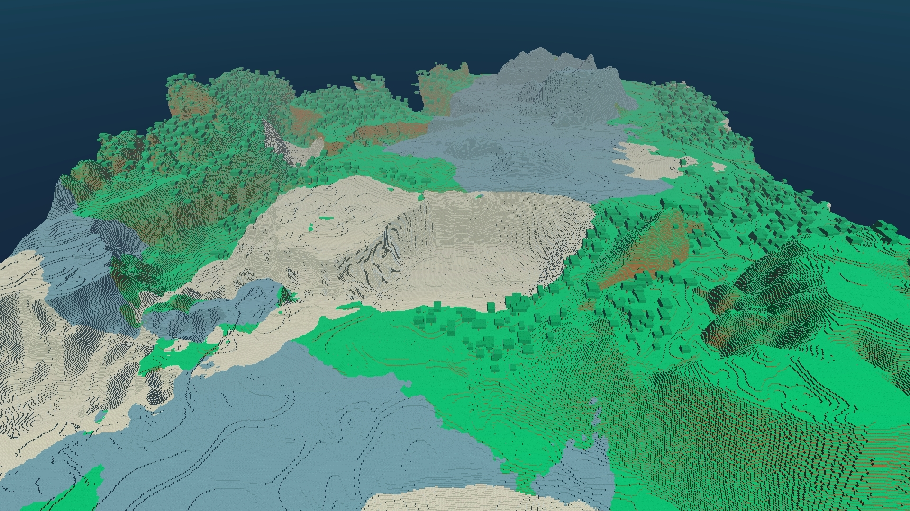
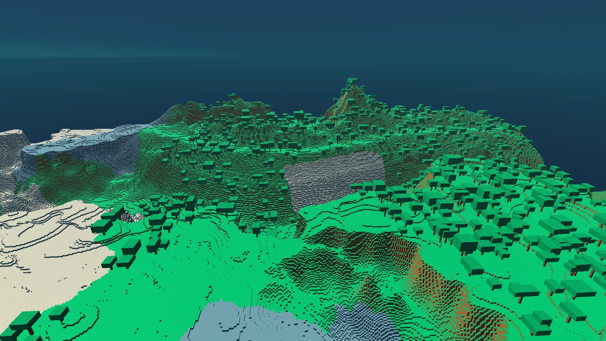
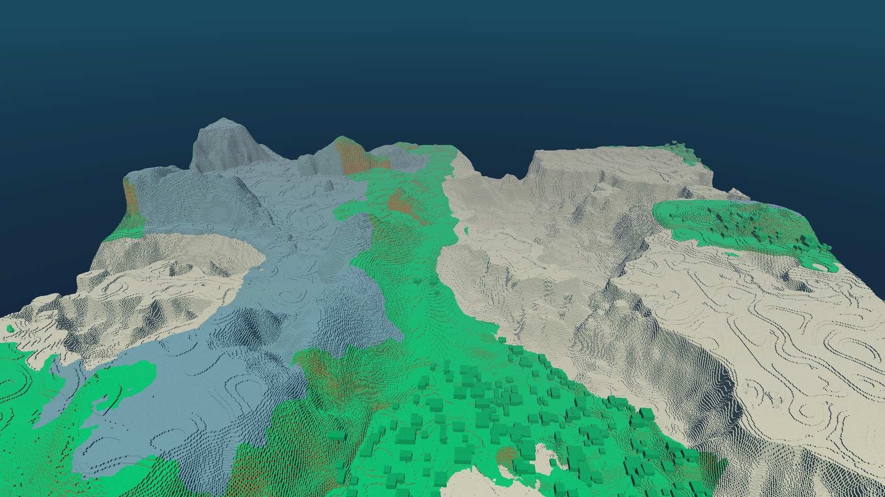
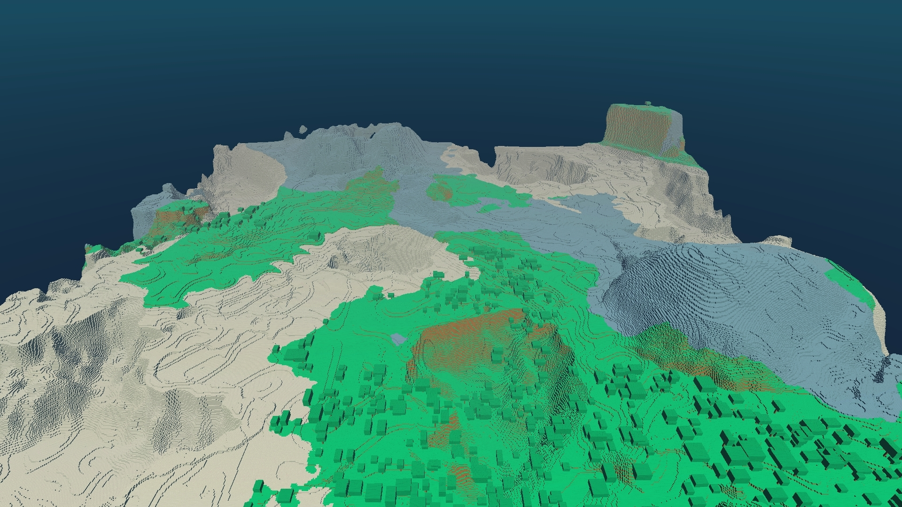
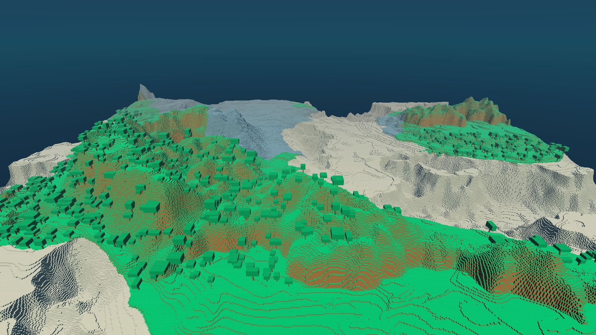
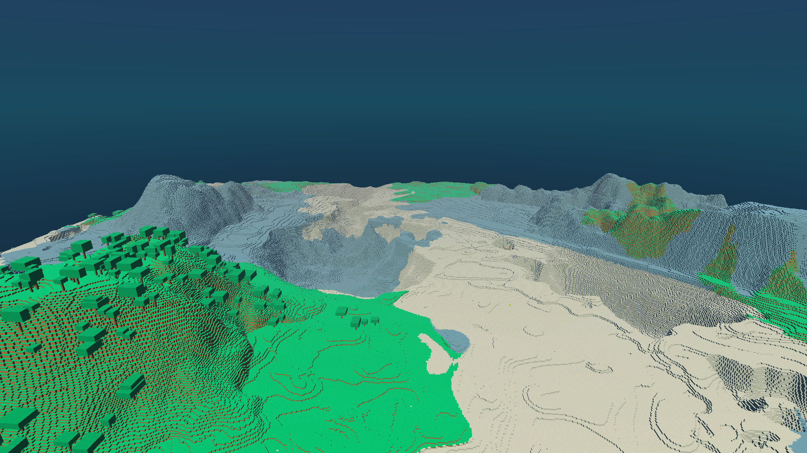
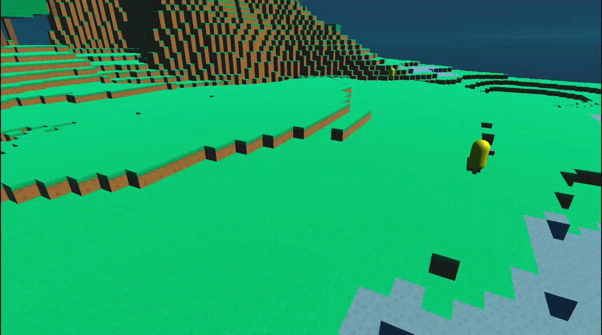

A procedurally generated voxel world with agents.

Project information
- Category: Unity Project
- Project date: -
- Made by: Ramón Pérez Segarra.
Description
The goal of this project is to create a procedurally generated world and populate it with different agents that will have to survivie by completing a series of tasks (gathering, crafting, building and eating).
Right now the project is just focused on the procedural generation of the worlds.
Project features
- A procedurally generated world made with layers of perlin noise.
- Atlas mapping.
- Rendering optimizations.
- Different kinds of cubes.
- Biome variations depending on temperature and precipitation noise maps.
- Procedural trees spawned on certain areas of the map.
- Simple agents with pathfinding and the ability to navigate the world.
Future additions
- Different types of "blocks" for creating more variety of objects in the world.
- An overworld made with wave funtion collapse.
- Different types of resources to collect.
- Procedurally generated caves.
How it was made
Now I will explain the project's creation process, some details on optimization techniques utlized here and I will talk about its future.
Project description
This is a Procedurally generated voxel world made in Unity Engine with the purpose of learning about procedural generation techniques and rendering optimizations on commercial engines such as Unity.
The main objective of the project was to create a procedurally generated world (the first approach had no voxels, instead it was just a 2D grid inspired by games such as Dwarf Fortress or Rimworld). with agents that were able to move through the world, interact with its objects and with other agents.
Due to time restrictions the project right now only has a procedurally generated world with simple agents that can navigate the generated world. It also has differentes biomes (very simple ones) defined by a couple of noise maps (precipitation and temperature maps) and some trees to decorate those biomes.
These are a few examples of the generation on its current state:
     And this is an example of a simple agent moving through the world:
